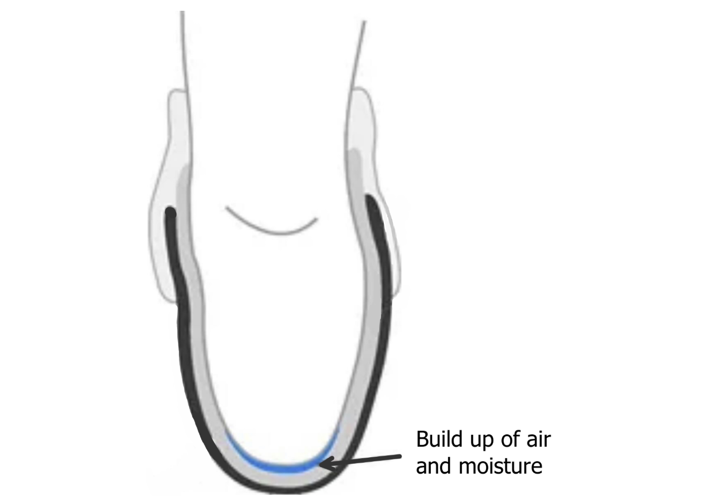
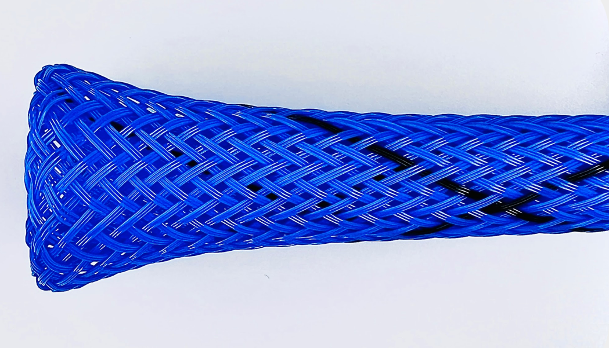
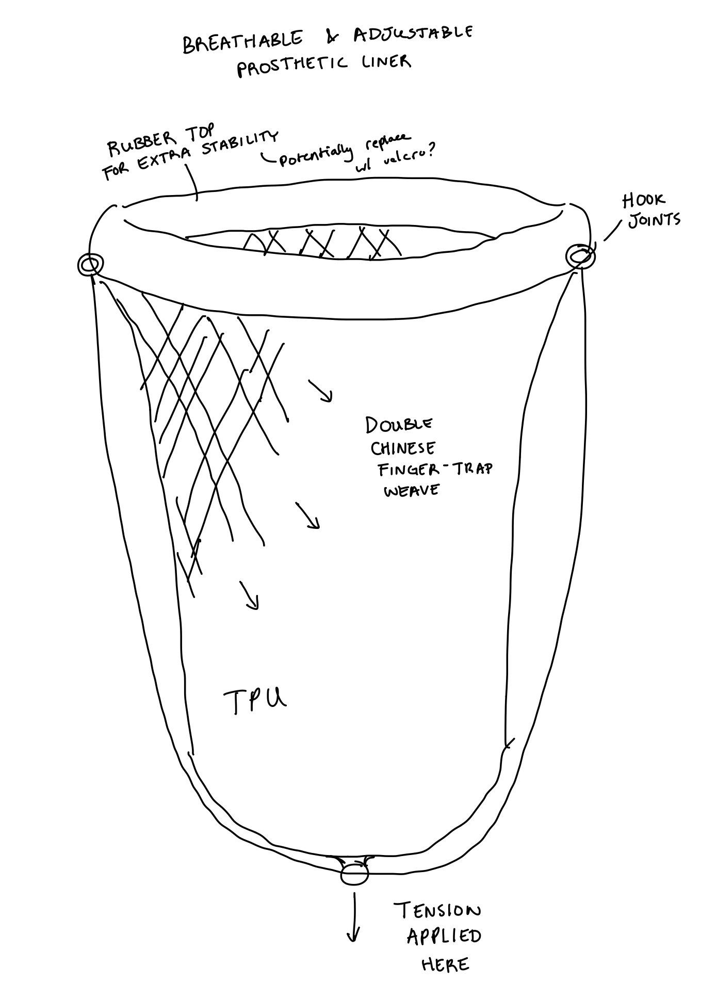
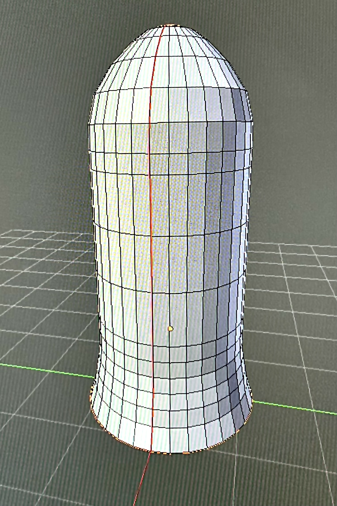
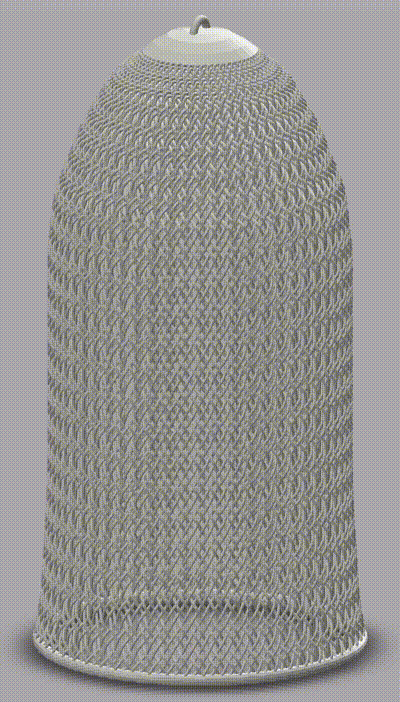
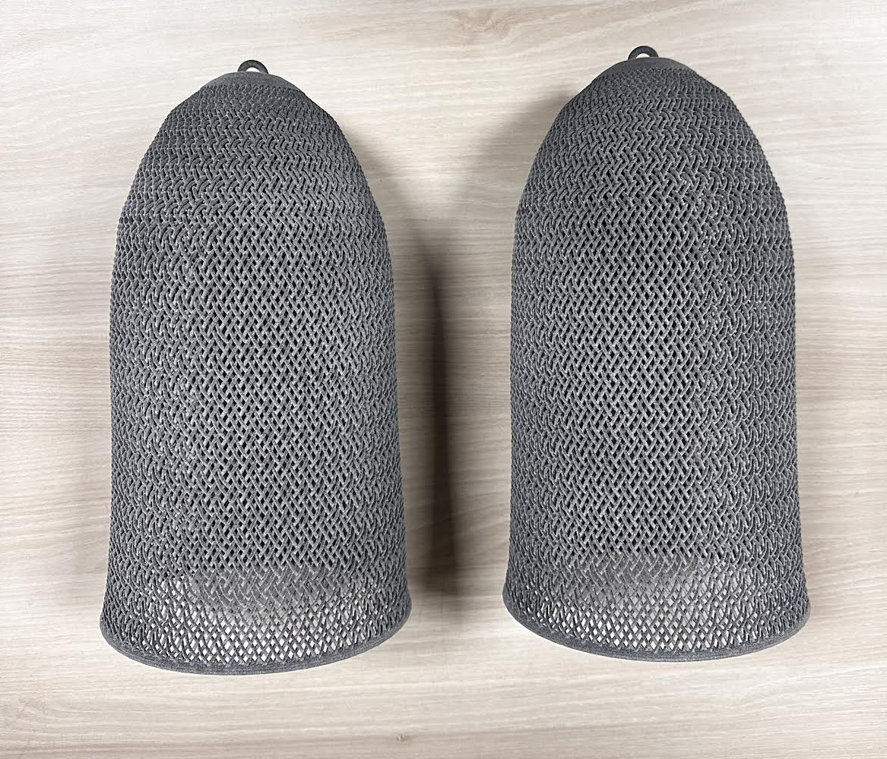

Breathable & Adjustable Prosthetic Liner
Prosthetic liners serve as the intermediary between a residual limb and a prosthetic socket. Their primary role is to provide comfort to the wearer. However, their design leads to significant issues: increased perspiration and discomfort due to moisture buildup from sweat. This can lead to many problems, such as chafing, bacterial infections, slippage of the silicon liner, and more. As part of the Accessible Prosthetics Initiative's (API) research program, I sought to address this problem.

I immediately thought of one thing - the Chinese Finger trap. If sweat was the issue, then why not incorporate a weave into the design? The Chinese Finger Trap weave would allow airflow, distribute pressure, and conform to the leg once tension is applied.
I began researching and quickly found something that caught my interest - a medical finger trap. These finger traps, shown below, are made to assist surgeons and are designed to securely hold a finger or limb in place while allowing for traction or manipulation. This can be very useful for surgeons when their patients are under anesthesia and their hand or arm need to be manipulated. A close up is shown below, displaying the medical finger trap's intricate weave.

I started with a rough sketch, shown below. My design conformed to the shape of a typical liner, with a chinese finger trap weave incorporated. It has a band up top for stability and comfort, as well as hook joints and a base joint to suspend a prosthesis.

I planned to rapid prototype using 3D modeling software. I wanted the shape and weave style to be clear before further manufacturing methods were employed. This is where I started to run into issues. Of all the CAD software I knew how to use, none could create a woven design, especially not in a cylindrical shape. But I didn't let that stop me. I researched and found that the best software to use to create a woven cylinder would be Blender. So I decided to pick up Blender.
Blender is a complicated software to use. Through quite a bit of trial and error, I was able to make the basic shape of a prosthetic liner, shown below. This was a great start, but I had a long way to go.

Before long, I had gotten a strong grasp of Blender, being able to manipulate a weave to conform to the shape I needed. Below is a time-lapse of me creating a woven prosthetic liner using Blender.
With a few tweaks here and there, I created the final design for my Adjustable and Breathable Lower Limb Prosthetic Liner:

Needless to say, I learned a lot. I learned that Blender is a last resort for engineers. I also learned that hard work and dedication CAN produce results, you just have to stick with it. I am very proud of the work I have done for the API research team.
I shared my design with the HP education team, who were happy to assist in printing the 3D model. They allowed me to use their Multi Jet Fusion printer, which can 3D print intricate components. Below are the 3D printed liners.

I decided to participate in the Pittsburgh's School of Health and Rehabilitation Science's (SHRS) challenge. They recruited innovative thinkers to take part in a month long online Cornell course to teach us entrepreneurial skills. We learned about how to properly address user needs, reach out to potential clients, and pitch our ideas. I learned so much from this course.
Although I did not end up winning the challenge, I am happy to say that my experiences from the course, presenting, and talking to end users truly revolutionized the way I will tackle problem-solving in the future.

I am confident that the skills, insights, and resilience I've developed through this journey will empower me to tackle future challenges with renewed creativity and determination.